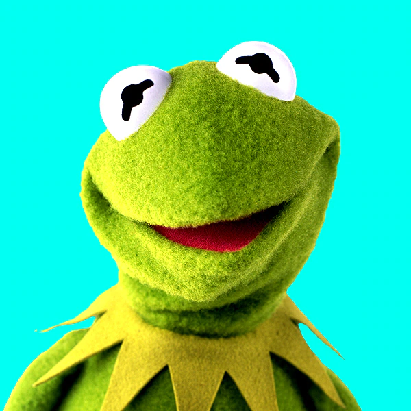
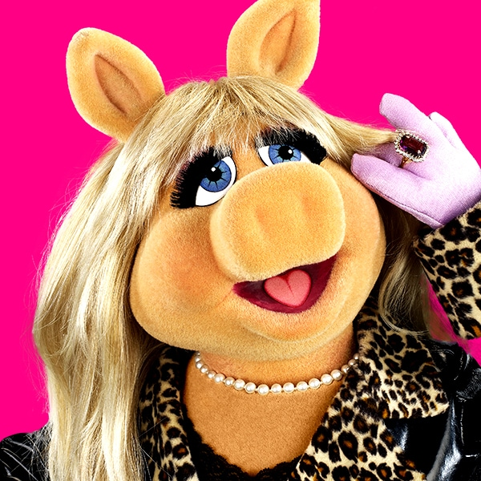
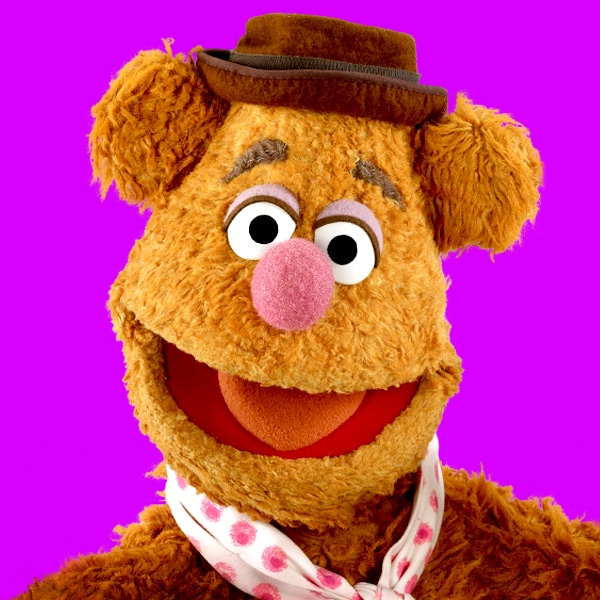
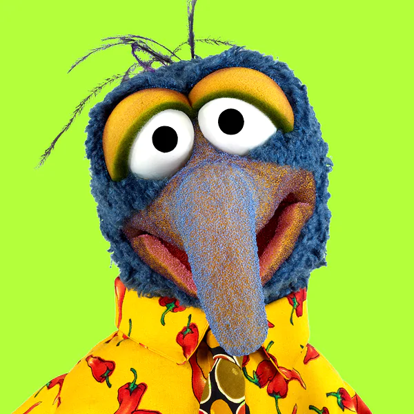
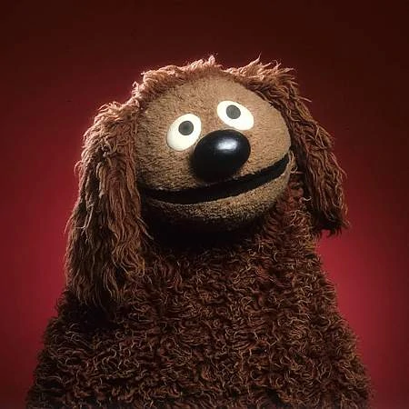
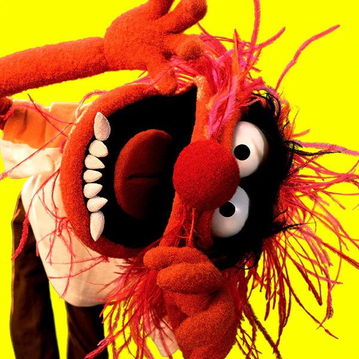

Quem sou eu?
Olá! Meu nome é Anderson Nunes, sou Aluno da Trybe e no desafio de criar uma página para testar meus conhecimentos resolvi criar uma fanpage para a melhor série de fantoches do mundo, Os Muppets! Espero que curtam essa fanpage e conheçam um pouco mais sobre esses bonecos incríveis!
História

- Os Muppets foram criados em Londres, por Jim Henson, em 1976. Os bonecos de pano faziam parte de uma série de tv que tinha como nome Muppets Show, o programa ficou na telinha até 1981. Depois disso, os Muppets estrelaram diversos programas de tv, filmes, seriados e mais um montão de programas em rede mundial.
Personagens
-
Kermit
-
Miss Piggy
-
Fozzie
-
Gonzo
-
Rowlf
-
Animal